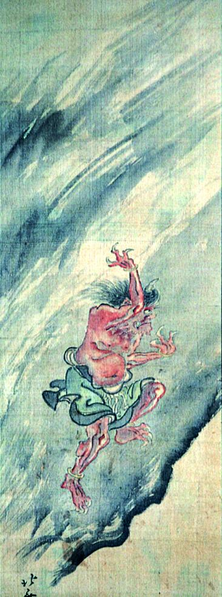

← 图鉴索引

坂道を駆け上がる赤鬼。腕を振り、前を見据えて飛ぶように駆けている。
著作者：葛飾北斎／出典：親書誌：A5_pushkin_0049：（鬼図；オニズ）／日付：2011／資源識別子：A5_pushkin_0049_0001_0000
Copyright (c)2010- International Research Center for Japanese Studies, Kyoto, Japan. All rights reserved.